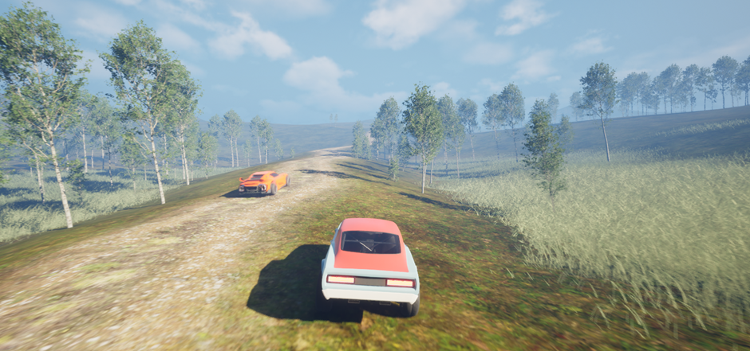
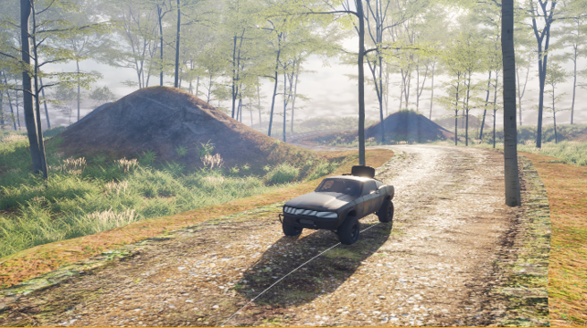
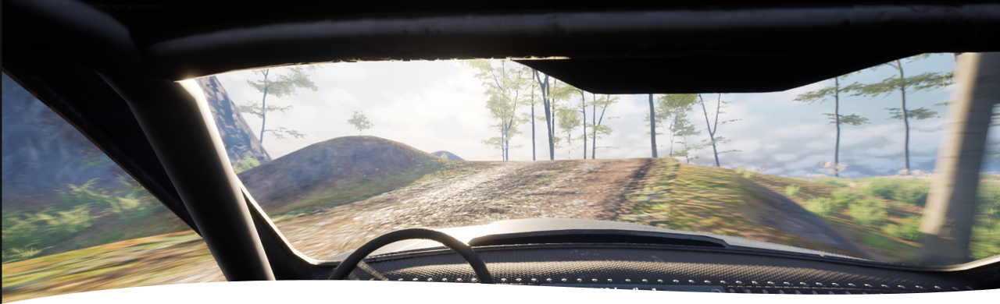
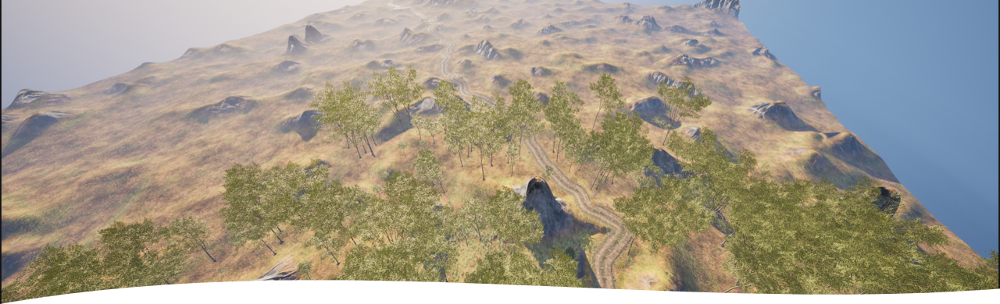
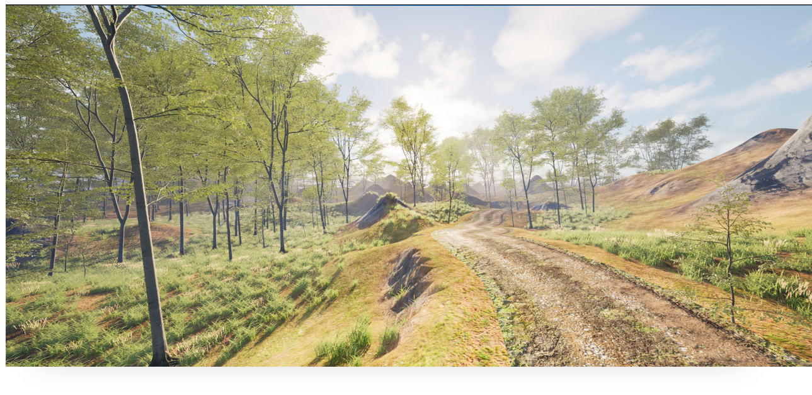
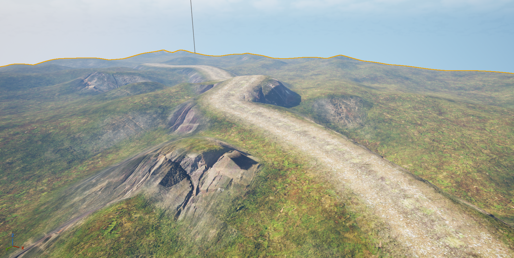
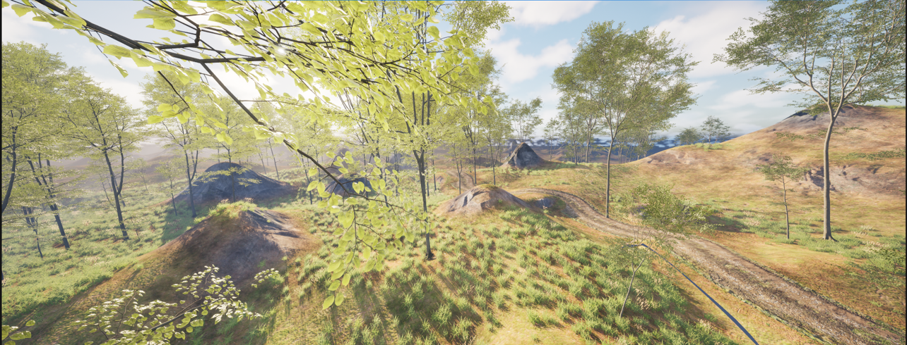

Unreal Engine · Solo Developer
Uncharted Rally
A procedurally generated rally game — my final year dissertation project at Kingston University, built on the Unreal Engine framework to create a unique rally gaming experience.
Core Features
The technical systems that drive each generated stage.
- Procedural terrain system using a custom chunking algorithm
- Dynamic texturing using virtual textures and auto-materials
- Advanced AI logic with programmable difficulty
- PCG setup for foliage and track pathfinding
- Mesh deformation algorithm for terrain deformation around the track
- Customisable vehicle setup using Chaos Vehicle
Design
The project aims to capture photorealism and use Unreal Engine's powerful real-time rendering capabilities. Each stage hands the player a new set of parameters, so vehicle setup decisions matter as much as driving skill.
Inspired by DiRT Rally and Art of Rally. Targeting Windows, with potential to explore consoles later.
Development Challenges
Mesh deformation initially caused performance problems, which I solved by applying the same chunking method used for terrain generation.
Implementing virtual textures on procedural geometry was another hurdle — the solution was converting the procedural meshes to static meshes so they could be baked and blended correctly.
Gameplay Loop
- Stage parameters are generated and shown to the player
- Player customises their car to suit the stage
- Player races against the AI opponent
- Win to advance to the next stage — fail and restart
Gallery







Dev Blog
I write regular dev logs about Uncharted Rally — read them on the blog page.